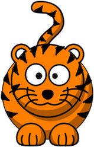
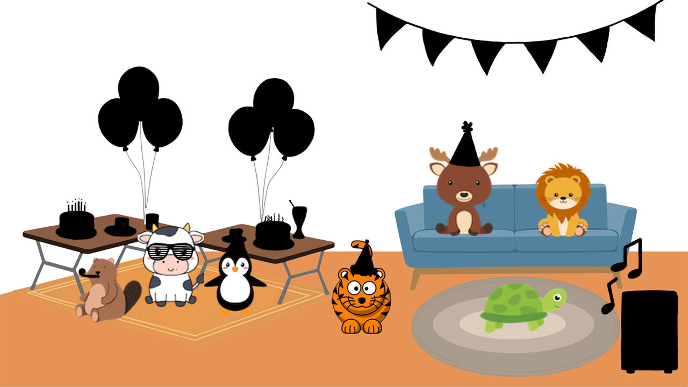

<!DOCTYPE html>
<html>
    <head>
        <meta charset="utf-8">
        <meta name="viewport" content="width=device-width, initial-scale=1">
        <title>Experiment</title>
        <script src="https://unpkg.com/jspsych@7.3.4"></script>
        <script src="https://unpkg.com/@jspsych/plugin-html-keyboard-response@1.1.3"></script>
        <script src="https://unpkg.com/@jspsych/plugin-html-button-response@1.1.3"></script>
        <script src="https://unpkg.com/@jspsych/plugin-preload@1.1.3"></script>
        <link href="https://unpkg.com/jspsych@7.3.4/css/jspsych.css" rel="stylesheet" type="text/css" />
        <style>
            :root {
                --canvas-width: 1250px;
                --canvas-height: 760px;
                --instr-text-width: 900px;
                --mc-width: 180px;
                --side-character-size: 100px;
                --tiger-screen-width: 220px;
                --instr-stim-size: 600px;
                --instr-button-gap: 110px;
                --probability-face-size: 200px;
                --instr-video-width: 300px;
                --instr-video-height: 500px;
                --instr-mc-top: 200px;
                --instr-mc-right: 160px;
                --prob-mc-top: 132px;
                --prob-mc-right: 100px;
                --instr-text-top: 114px;
                --prob-instr-text-top: 38px;
                --instr-stim-top: 90px;
            }
/* fit the experiment canvas inside the browser viewport. */
html, body {
    margin: 0;
    overflow: hidden;
}

        #jspsych-content {
            display: flow-root;
            position: relative;
            width: var(--canvas-width);
            max-width: var(--canvas-width);
            min-height: var(--canvas-height);
            margin: 0 auto;
        }
/* imgs on test trials should retain the same dimensions used in CHS. */
#jspsych-content.trial-button-position {
    --canvas-width: clamp(810px, calc(100vw - 16px), 1100px);
    min-height: 0;
}
.tiger-screen {
    display: block;
    width: var(--tiger-screen-width);
    height: auto;
    margin: 0 auto 30px;
}
.trial-layout {
    position: relative;
    display: grid;
    grid-template-columns: repeat(2, minmax(0, 1fr));
    grid-template-rows: 156px auto;
    justify-items: center;
    gap: 10px 20px;
    padding-top: 8px;
    text-align: center;
}
.main-character {
    grid-column: 1 / -1;
    width: var(--side-character-size);
    height: 156px;
    object-fit: contain;
}
.stim-container {
    position: relative;
}
.stim-rect,
.side-character-img {
    display: block;
    width: auto;
    height: auto;
    margin: 0 auto;
}
.stim-rect {
    width: 375px;
    height: 575px;
}
.side-character-container {
    position: relative;
    display: grid;
    place-items: center;
    width: 170px;
    height: 165px;
    margin: 0 auto;
}
.side-character-img {
    pointer-events: none;
}
#jspsych-content.trial-button-position #jspsych-html-button-response-btngroup {
    position: absolute;
    inset: 0;
    pointer-events: none;
}
.trial-button-position .jspsych-html-button-response-button {
    position: absolute;
    margin: 0 !important;
}
.side-character-btn {
    width: 100%;
    height: 100%;
    opacity: 0;
    background: transparent;
    border: none;
    box-shadow: none;
    padding: 0;
    margin: 0;
    cursor: pointer;
}
.stim-container.pulse-highlight {
    animation: yellowPulse 0.85s ease-in-out 1;
}
@keyframes yellowPulse {
    0% {
        box-shadow: 0 0 0 rgba(255, 230, 0, 0);
    }
50% {
    box-shadow: 0 0 35px 12px rgba(255, 230, 0, 0.9);
}
100% {
    box-shadow: 0 0 0 rgba(255, 230, 0, 0);
}
}
/* instruction trials */
.instr-layout {
    position: relative;
    width: var(--canvas-width);
    height: var(--canvas-height);
    margin: 0 auto;
    text-align: center;
}
.instr-main-character {
    position: absolute;
    top: var(--instr-mc-top);
    right: var(--instr-mc-right);
    width: var(--mc-width);
    height: auto;
}
.instr-text {
    position: absolute;
    top: var(--instr-text-top);
    left: 50%;
    transform: translate(-50%, -50%);
    width: var(--instr-text-width);
    text-align: center;
}
.instr-video {
    width: var(--instr-video-width);
    height: var(--instr-video-height);
}
.instr-stim-container {
    position: absolute;
    top: var(--instr-stim-top);
    left: 50%;
    width: var(--instr-stim-size);
    height: var(--instr-stim-size);
    transform: translateX(-50%);
}
.instr-stim-img {
    display: block;
    max-width: 100%;
    height: auto;
    margin: 0 auto;
}
.instr-side-character {
    display: block;
    width: var(--side-character-size);
    height: var(--side-character-size);
    margin: 12px auto 0 auto;
    pointer-events: none;
}
.subset-button-position #jspsych-html-button-response-btngroup {
    display: flex;
    flex-direction: row;
    justify-content: center;
    align-items: center;
    gap: var(--instr-button-gap);
    margin-top: -60px;
}
.subset-circle-button {
    width: 175px;
    height: 175px;
    border: 3px solid black;
    border-radius: 50%;
    cursor: pointer;
}
.subset-button-position
.jspsych-html-button-response-button:nth-child(1)
.subset-circle-button {
    background-color: orange;
}
.subset-button-position
.jspsych-html-button-response-button:nth-child(2)
.subset-circle-button {
    background-color: dodgerblue;
}
.subset-circle-button:hover {
    transform: scale(1.05);
}
/* probability instruction trials */
.prob-instr-text {
    position: absolute;
    top: var(--prob-instr-text-top);
    left: 50%;
    transform: translateX(-50%);
    width: var(--instr-text-width);
    text-align: center;
}
.prob-instr-main-character {
    position: absolute;
    top: var(--prob-mc-top);
    right: var(--prob-mc-right);
    width: var(--mc-width);
    height: auto;
}
.prob-instr-side-character {
    display: block;
    width: var(--side-character-size);
    height: var(--side-character-size);
    margin: 7px auto 0 auto;
    pointer-events: none;
}
.prob-instr-helper {
    margin-top: 8px;
    font-size: 20px;
    line-height: 1.4;
}
.yes-no-button-position #jspsych-html-button-response-btngroup {
    position: relative;
    z-index: 10;
    display: flex;
    flex-direction: row;
    justify-content: center;
    align-items: center;
    gap: var(--instr-button-gap);
    margin-top: -80px;
}
.probability-face-button {
    position: relative;
    z-index: 11;
    background: transparent;
    border: none;
    padding: 0;
    cursor: pointer;
}
.probability-face-img {
    width: var(--probability-face-size);
    height: var(--probability-face-size);
    object-fit: contain;
    pointer-events: none;
}
.yes-no-button-position
.jspsych-html-button-response-button:nth-child(1)
.probability-face-img {
    content: url("img/probability_instructions/happy_face.png");
}
.yes-no-button-position
.jspsych-html-button-response-button:nth-child(2)
.probability-face-img {
    content: url("img/probability_instructions/sad_face.png");
}
.probability-face-button:hover {
    transform: scale(1.05);
}
/* party transitions */
.party-transition-layout {
    position: fixed;
    top: 0;
    left: 0;
    width: 100vw;
    height: 100vh;
    overflow: hidden;
    background: black;
    z-index: 9999;
}
.party-transition-video {
    width: 100vw;
    height: 100vh;
    object-fit: contain;
    background: black;
}
/* locking audios */
.audio-locked #jspsych-instructions-next,
.audio-locked #jspsych-html-button-response-btngroup button {
    pointer-events: none;
    opacity: 0.5;
}
.audio-locked #jspsych-html-button-response-btngroup,
.audio-locked #jspsych-html-button-response-btngroup .jspsych-html-button-response-button,
.audio-locked #jspsych-html-button-response-btngroup button {
    pointer-events: none !important;
}
    .child-next-btn {
        min-width: 180px;
        min-height: 65px;
        font-size: 26px;
        font-weight: bold;
    }
    #jspsych-content:has(.party-transition-layout) #jspsych-html-button-response-btngroup {
        position: fixed;
        right: 35px;
        bottom: 30px;
        z-index: 10000;
    }
    .party-introduction-arrow {
        border: 0;
        padding: 0;
        background: transparent;
        cursor: pointer;
    }
    .party-introduction-arrow svg {
        display: block;
        width: min(160px, 25vw, 25vh);
        height: auto;
        filter: drop-shadow(0 2px 5px black);
        pointer-events: none;
    }
    </style>
</head>
    <body></body>
    <script>

// comparison stimuli for each block, with ratio, boundary, and congruency information
var stim_block_1 = [
    {opt1_stim:"4_3", opt2_stim:"5_13", ratio_props:2.06, numerator_congruency:"incongru", half:"opposite"},
    {opt1_stim:"2_15", opt2_stim:"1_3", ratio_props:2.12, numerator_congruency:"incongru", half:"same"},
    {opt1_stim:"3_1", opt2_stim:"5_11", ratio_props:2.4, numerator_congruency:"incongru", half:"opposite"},
    {opt1_stim:"2_12", opt2_stim:"1_2", ratio_props:2.33, numerator_congruency:"incongru", half:"same"},
    {opt1_stim:"2_2", opt2_stim:"3_13", ratio_props:2.67, numerator_congruency:"incongru", half:"opposite"},
    {opt1_stim:"2_14", opt2_stim:"1_2", ratio_props:2.67, numerator_congruency:"incongru", half:"same"},
    {opt1_stim:"3_10", opt2_stim:"2_1", ratio_props:2.89, numerator_congruency:"incongru", half:"opposite"},
    {opt1_stim:"1_2", opt2_stim:"2_15", ratio_props:2.83, numerator_congruency:"incongru", half:"same"}
];

var stim_block_2 = [
    {opt1_stim:"5_13", opt2_stim:"4_3", ratio_props:2.06, numerator_congruency:"incongru", half:"opposite"},
    {opt1_stim:"1_3", opt2_stim:"2_15", ratio_props:2.12, numerator_congruency:"incongru", half:"same"},
    {opt1_stim:"5_11", opt2_stim:"3_1", ratio_props:2.4, numerator_congruency:"incongru", half:"opposite"},
    {opt1_stim:"1_2", opt2_stim:"2_12", ratio_props:2.33, numerator_congruency:"incongru", half:"same"},
    {opt1_stim:"3_13", opt2_stim:"2_2", ratio_props:2.67, numerator_congruency:"incongru", half:"opposite"},
    {opt1_stim:"1_2", opt2_stim:"2_14", ratio_props:2.67, numerator_congruency:"incongru", half:"same"},
    {opt1_stim:"2_1", opt2_stim:"3_10", ratio_props:2.89, numerator_congruency:"incongru", half:"opposite"},
    {opt1_stim:"2_15", opt2_stim:"1_2", ratio_props:2.83, numerator_congruency:"incongru", half:"same"}
];

// need to initialize jsPsych and the timeline, which will control the actual experiment
var timeline = [];
var jsPsych = initJsPsych({
        show_progress_bar: false,
    });
// trial-level variables
var trialIndex = 0;
var curTrial = "temp";
var block = 0; // 0 = first format block, 1 = second format block
var left_stim = "temp";
var right_stim = "temp";
var left_path = "temp";
var right_path = "temp";
var trialIndexType = "test"; // fix to add instruction
// preload audios 
var preload_audio = [
"audios/introduction_party.m4a",
"audios/start.m4a",
"audios/arrow.m4a",
"audios/next.m4a",
"audios/click_instructions.m4a",
"audios/practice_transition.m4a",
"audios/left_prompt.m4a",
"audios/right_prompt.m4a",
"audios/probability/task_introduction.m4a",
"audios/mixture/task_introduction.m4a",
"audios/sharing/task_introduction.m4a",
"audios/probability/task_prompt.m4a",
"audios/mixture/task_prompt.m4a",
"audios/sharing/task_prompt.m4a",
"audios/mixture/introducing_parts.m4a",
"audios/probability/demo1_transition.m4a",
"audios/sharing/demo1_transition.m4a",
"audios/probability/identifyingparts_orange.m4a",
"audios/mixture/identifyingparts_orange.m4a",
"audios/sharing/identifyingparts_orange.m4a",
"audios/probability/correct_feedback_orange.m4a",
"audios/probability/incorrect_feedback_orange.m4a",
"audios/mixture/correct_feedback_orange.m4a",
"audios/mixture/incorrect_feedback_orange.m4a",
"audios/sharing/correct_feedback_orange.m4a",
"audios/sharing/incorrect_feedback_orange.m4a",
"audios/probability/demo2_transition.m4a",
"audios/probability/identifyingparts_blue.m4a",
"audios/mixture/identifyingparts_blue.m4a",
"audios/sharing/identifyingparts_blue.m4a",
"audios/probability/correct_feedback_blue.m4a",
"audios/probability/incorrect_feedback_blue.m4a",
"audios/probability/click_instructions.m4a",
"audios/mixture/correct_feedback_blue.m4a",
"audios/mixture/incorrect_feedback_blue.m4a",
"audios/sharing/correct_feedback_blue.m4a",
"audios/sharing/incorrect_feedback_blue.m4a",
"audios/sharing/click_instructions.m4a",
"audios/probability/block1_transition.m4a",
"audios/sharing/block1_transition.m4a",
"audios/mixture/block1_transition.m4a",
"audios/mixture/click_instructions.m4a",
"audios/probability/block2_transition.m4a",
"audios/mixture/block2_transition.m4a",
"audios/sharing/block2_transition.m4a",
"audios/sharing/demo.m4a",
];
// preload animal imgs
var trial_img = [
"img/tiger.png",
"img/party_tiger.png",
"img/elephant.png",
"img/animals/dog.png",
"img/animals/lion.png",
"img/animals/moose.png",
"img/animals/hummingbird.png",
"img/animals/sloth.png",
"img/animals/monkey.png",
"img/animals/leopard.png",
"img/animals/turtle.png",
"img/animals/wolf.png",
"img/animals/octopus.png",
"img/animals/penguin.png",
"img/animals/parrot.png",
"img/animals/cow.png",
"img/animals/dolphin.png",
"img/animals/hippo.png",
"img/animals/frog.png",
"img/animals/polarbear.png",
"img/animals/shark.png",
"img/animals/squirrel.png",
"img/animals/beaver.png",
"img/animals/bear.png",
"img/animals/bat.png",
"img/animals/seagull.png",
"img/animals/bluewhale.png",
"img/animals/seahorse.png",
"img/animals/fox.png",
"img/animals/narwhal.png",
"img/animals/zebra.png",
"img/animals/fish.png",
"img/animals/giraffe.png",
"img/animals/bluejay.png",
"img/animals/starfish.png",
];
// preload test stimuli by format for each block
function getStimPath(stimList, formatCondition) {
var paths = [];
    stimList.forEach(function (trial) {
        paths.push(
        "StimFiles_test/" +
        formatCondition +
        "_" +
        participantBottomColor +
        "_bottom_" +
        trial.opt1_stim +
        ".png",
    );
    paths.push(
    "StimFiles_test/" +
    formatCondition +
    "_" +
    participantBottomColor +
    "_bottom_" +
    trial.opt2_stim +
    ".png",
);
});
return paths;
}
// preload format-specific instruction stim
var instructions_img = [
"img/format_instructions/ContRectInt_blue_bottom_7_7.png",
"img/format_instructions/ContRectInt_orange_bottom_7_7.png",
"img/format_instructions/DivRectInt_blue_bottom_7_7.png",
"img/format_instructions/DivRectInt_orange_bottom_7_7.png",
];
// preload sharing-specific assets
var sharing_img = ["img/sharing_instructions/total.png"];
var probability_img = [
"img/probability_instructions/happy_face.png",
"img/probability_instructions/sad_face.png",
];
// preload probability-specific assets
var probability_videos = [
"videos/probability_instructions/ContRectInt_blue_bottom_7_7_orange.mp4",
"videos/probability_instructions/ContRectInt_blue_bottom_7_7_blue.mp4",
"videos/probability_instructions/ContRectInt_orange_bottom_7_7_orange.mp4",
"videos/probability_instructions/ContRectInt_orange_bottom_7_7_blue.mp4",
"videos/probability_instructions/DivRectInt_blue_bottom_7_7_orange.mp4",
"videos/probability_instructions/DivRectInt_blue_bottom_7_7_blue.mp4",
"videos/probability_instructions/DivRectInt_orange_bottom_7_7_orange.mp4",
"videos/probability_instructions/DivRectInt_orange_bottom_7_7_blue.mp4",
];
// preload party transition videos shown after every 4 test trials
var party_transition_videos = [
    "videos/party_transitions/decorations.mp4",
    "videos/party_transitions/party_favors.mp4",
    "videos/party_transitions/cake.mp4",
    "videos/party_transitions/ending.mp4",
];
var partyTransitionIndex = 0;
var parent_introduction = [
    "videos/introduction.mp4"
];
var party_introduction = [
"img/party_introduction.png"
];
// setting the task conditions
var taskConditions = ["probability", "mixture", "sharing"];
var myConditionNumber = Math.floor(Math.random() * 3);
var myCondition = taskConditions[myConditionNumber];
// setting the format order
var orderConditions = ["continuousFirst", "discretizedFirst"];
var myOrderNumber = Math.floor(Math.random() * 2);
var myOrder = orderConditions[myOrderNumber];
// setting the subset order
var bottomColorConditions = ["orange", "blue"];
var bottomColorNumber = Math.floor(Math.random() * 2);
var participantBottomColor = bottomColorConditions[bottomColorNumber];
// set the blocks and formats for each participant using random assignment
var ratio_tasks =
myOrder == "continuousFirst"
? [
{
    condition: "ContRectInt",
    stim_pngs: "ContRectInt",
    disccont: "continuous",
    reg: "regular",
},
{
    condition: "DivRectInt",
    stim_pngs: "DivRectInt",
    disccont: "discretized",
    reg: "regular",
},
]
: [
{
    condition: "DivRectInt",
    stim_pngs: "DivRectInt",
    disccont: "discretized",
    reg: "regular",
},
{
    condition: "ContRectInt",
    stim_pngs: "ContRectInt",
    disccont: "continuous",
    reg: "regular",
},
];
// adding this information for every trial in datafile
jsPsych.data.addProperties({
    condition: myCondition,
    bottom_color: participantBottomColor,
});
// shuffle is the Fisher-Yates (aka Knuth) Shuffle
function shuffle(array) {
let currentIndex = array.length,
    randomIndex;
    while (currentIndex != 0) {
        randomIndex = Math.floor(Math.random() * currentIndex);
        currentIndex--;
        [array[currentIndex], array[randomIndex]] = [array[randomIndex], array[currentIndex]];
    }
return array;
}
//setting the color counterbalance
var numColor = "orange";
var otherColor = "blue";
// adding accuracy information to the stimulus lists
Object.keys(stim_block_1).forEach((key) => {
    stim_block_1[key].leftProp =
    (stim_block_1[key].opt1_stim.split("_")[0] * 1) /
    (stim_block_1[key].opt1_stim.split("_")[0] * 1 + stim_block_1[key].opt1_stim.split("_")[1] * 1);
    stim_block_1[key].rightProp =
    (stim_block_1[key].opt2_stim.split("_")[0] * 1) /
    (stim_block_1[key].opt2_stim.split("_")[0] * 1 + stim_block_1[key].opt2_stim.split("_")[1] * 1);
    if (stim_block_1[key].leftProp > stim_block_1[key].rightProp) {
        stim_block_1[key].correct_response = "left";
    } else if (stim_block_1[key].rightProp > stim_block_1[key].leftProp) {
        stim_block_1[key].correct_response = "right";
    }
});
// adding accuracy information to the stimulus lists
Object.keys(stim_block_2).forEach((key) => {
    stim_block_2[key].leftProp =
    (stim_block_2[key].opt1_stim.split("_")[0] * 1) /
    (stim_block_2[key].opt1_stim.split("_")[0] * 1 + stim_block_2[key].opt1_stim.split("_")[1] * 1);
    stim_block_2[key].rightProp =
    (stim_block_2[key].opt2_stim.split("_")[0] * 1) /
    (stim_block_2[key].opt2_stim.split("_")[0] * 1 + stim_block_2[key].opt2_stim.split("_")[1] * 1);
    if (stim_block_2[key].leftProp > stim_block_2[key].rightProp) {
        stim_block_2[key].correct_response = "left";
    } else if (stim_block_2[key].rightProp > stim_block_2[key].leftProp) {
        stim_block_2[key].correct_response = "right";
    }
});
// pool of side character pairs assigned uniquely across trials
var animalPool = [
"dog",
"lion",
"moose",
"hummingbird",
"sloth",
"monkey",
"leopard",
"turtle",
"wolf",
"octopus",
"penguin",
"parrot",
"cow",
"dolphin",
"hippo",
"frog",
"polarbear",
"shark",
"squirrel",
"beaver",
"bear",
"bat",
"seagull",
"bluewhale",
"seahorse",
"fox",
"narwhal",
"zebra",
"fish",
"giraffe",
"bluejay",
"starfish",
];
// shuffle test stimuli
shuffle(stim_block_1);
shuffle(stim_block_2);
// shuffle side character pairs
var shuffledAnimals = shuffle(animalPool.slice());
// combine both blocks and assign unique animals across the whole task
var allTrials = stim_block_1.concat(stim_block_2);
allTrials.forEach(function (trial, i) {
    trial.animal = shuffledAnimals[i];
});
// choose task-specific click instruction audio for instruction trials 
function getClickInstructionsAudio() {
    if (myCondition == "probability") {
        return "audios/probability/click_instructions.m4a";
    } else if (myCondition == "mixture") {
        return "audios/mixture/click_instructions.m4a";
    } else if (myCondition == "sharing") {
        return "audios/sharing/click_instructions.m4a";
    }
return "";
}
// prompts based on task condition
function getCurPrompt() {
    if (myCondition == "probability") {
        return "audios/probability/task_prompt.m4a";
    } else if (myCondition == "mixture") {
        return "audios/mixture/task_prompt.m4a";
    } else if (myCondition == "sharing") {
        return "audios/sharing/task_prompt.m4a";
    }
return "";
}
// create test trials, building the current test trial from the active stimulus block
function getCurTrial() {
var curList;
    if (ratio_loop == 0) {
        curList = stim_block_1;
    }
if (ratio_loop == 1) {
    curList = stim_block_2;
}
curTrial = curList[trialIndex];
left_stim = curTrial.opt1_stim;
right_stim = curTrial.opt2_stim;
var bottomColor = participantBottomColor;
left_path = "StimFiles_test/" + curCondition + "_" + bottomColor + "_bottom_" + left_stim + ".png";
right_path = "StimFiles_test/" + curCondition + "_" + bottomColor + "_bottom_" + right_stim + ".png";
var curAnimal = curTrial.animal;
var curSideCharacter = String(curAnimal).trim().replace(".png", "").replace(" ", "");
var animal_path = "img/animals/" + curSideCharacter + ".png";
return {
    left_path: left_path,
    right_path: right_path,
    animal_path: animal_path,
    preload_audio: getCurPrompt(),
    correct_response: curTrial.correct_response,
};
}
// defining HTML for the current test trial
function buildTestStim() {
var trialData = getCurTrial();
    return `
    <div class="trial-layout">
        
        <div id="left-stim-container" class="stim-container left">
            
            <div class="side-character-container">
                
            </div>
    </div>
<div id="right-stim-container" class="stim-container right">
    
    <div class="side-character-container">
        
    </div>
</div>
</div>`;
}
// instruction img based on format order and subset order
function getInstructionImg(blockNumber) {
var formatCondition = ratio_tasks[blockNumber].condition;
    return "img/format_instructions/" + formatCondition + "_" + participantBottomColor + "_bottom_7_7.png";
}
// create instruction trials
function buildInstrStim(audioPath, blockNumber, textInstruction) {
var instructionImg = getInstructionImg(blockNumber);
    return `
    <div class="instr-layout">
        <div class="instr-text">
            ${createAudioPrompt(audioPath, getClickInstructionsAudio())}
            <p style="font-size: 20px; line-height: 1.4; margin-top: 8px;">
                ${textInstruction}
            </p>
    </div>

<div class="instr-stim-container">
    
    
</div>
</div>
`;
}
// convert color label to numerator subset location for instruction trials
function getInstrFormat(colorName) {
    if (participantBottomColor === colorName) {
        return "bottom";
    } else {
        return "top";
    }
}
// choose probability demo for current format and condition
function getProbabilityInstrDemo(blockNumber, landedColor) {
var formatCondition = ratio_tasks[blockNumber].condition;
    return (
    "videos/probability_instructions/" +
    formatCondition +
    "_" +
    participantBottomColor +
    "_bottom_7_7_" +
    landedColor +
    ".mp4"
);
}
// switch button-positioning classes for each trial type
function setButtonLayoutClass(className) {
var content = document.querySelector("#jspsych-content");
    content.classList.remove("trial-button-position", "subset-button-position", "yes-no-button-position");
    if (className) {
        content.classList.add(className);
    }
}
// define HTML for probability instruction trials
function buildProbabilityInstrTrial(audioPath, blockNumber, landedColor, textInstruction) {
var videoPath = getProbabilityInstrDemo(blockNumber, landedColor);
    return `
    <div class="instr-layout">
        <div class="prob-instr-text">
            ${createAudioPrompt(audioPath, null, true)}
            <p class="prob-instr-helper">
                ${textInstruction}
            </p>
        <video
        id="probability-demo-video"
        controls
        preload="auto"
        class="instr-video"
        onended="finishProbabilityDemoAudio()"
        >
        <source src="${videoPath}" type="video/mp4">
        </video>
    
    
</div>
</div>
`;
}
function loadNextButton() {
    var wrapper = document.querySelector(".audio-prompt-wrapper");
    var audioPath = wrapper ? wrapper.getAttribute("data-audio-path") : "";
    var button = document.querySelector(".child-next-btn");

    lockAudio();

    function playNextPrompt() {
        playAudioFile("audios/next.m4a", function () {
            unlockAudio();
            button.disabled = false;
        });
    }

    if (audioPath) {
        playAudioFile(audioPath, playNextPrompt);
    } else {
        playNextPrompt();
    }
}

// instruction feedback per task condition
function makeInstructionFeedback(correctAudio, incorrectAudio) {
    return {
        type: jsPsychHtmlButtonResponse,
        stimulus: function () {
var last = jsPsych.data.get().last(1).values()[0];
var feedbackAudio = last.correct ? correctAudio : incorrectAudio;
            return `
            <div style="text-align: center; margin-top: 240px;">
                
                ${createAudioPrompt(feedbackAudio)}
                </div>
    `;
},
choices: ["Next"],
button_html: '<button class="child-next-btn" disabled>%choice%</button>',
on_load: loadNextButton,
on_finish: function (data) {
var last = jsPsych.data.get().last(2).values()[0];
    data.event = "instruction_feedback";
    data.instr_trial_accuracy = last.correct;
},
};
}
// invisible button for test trials
var hidden_button_html = `
<button class="side-character-btn" aria-label="%choice%"></button>
`;
// mixture task instruction trials: identify numerator
var mixture_check_orange_block1 = {
    type: jsPsychHtmlButtonResponse,
    stimulus: function () {
        return buildInstrStim("audios/mixture/identifyingparts_orange.m4a", 0, "");
    },
choices: ["num", "other"],
button_html: '<button class="subset-circle-button" aria-label="%choice%"></button>',
response_ends_trial: true,
on_load: function () {
    setButtonLayoutClass("subset-button-position");
    playCurrentInstructionAudio();
},
on_finish: function (data) {
    setButtonLayoutClass(null);
var correctSubset = "num";
    data.event = "instruction_check";
    data.instruction_question = "Which color is the sweet oranges?";
    data.instruction_target_color = "orange";
    data.response_subset = data.response === 0 ? "num" : "other";
    data.correct_subset = correctSubset;
    data.correct = data.response_subset === correctSubset;
    data.block = 0;
    data.format = ratio_tasks[0].disccont;
    data.bottom_color = participantBottomColor;
},
};
// mixture task instruction trials: identify other subset
var mixture_check_blue_block1 = {
    type: jsPsychHtmlButtonResponse,
    stimulus: function () {
        return buildInstrStim("audios/mixture/identifyingparts_blue.m4a", 0, "");
    },
choices: ["num", "other"],
button_html: '<button class="subset-circle-button" aria-label="%choice%"></button>',
response_ends_trial: true,
on_load: function () {
    setButtonLayoutClass("subset-button-position");
    playCurrentInstructionAudio();
},
on_finish: function (data) {
    setButtonLayoutClass(null);
var correctSubset = "other";
    data.event = "instruction_check";
    data.instruction_question = "Which color is water?";
    data.instruction_target_color = "blue";
    data.response_subset = data.response === 0 ? "num" : "other";
    data.correct_subset = correctSubset;
    data.correct = data.response_subset === correctSubset;
    data.block = 0;
    data.format = ratio_tasks[0].disccont;
    data.bottom_color = participantBottomColor;
},
};
// probability task instruction trials: identify numerator
var probability_check_orange_block1 = {
    type: jsPsychHtmlButtonResponse,
    stimulus: function () {
        return buildProbabilityInstrTrial("audios/probability/demo1_transition.m4a", 0, "orange", "");
    },
choices: ["yes", "no"],
button_html: `
<button class="probability-face-button" aria-label="%choice%">
    
</button>
`,
response_ends_trial: true,
on_load: function () {
    setButtonLayoutClass("yes-no-button-position");
    setAudioLock(true);
    playCurrentInstructionAudio();
},
on_finish: function (data) {
    setButtonLayoutClass(null);
var correctAnswer = "yes";
    data.event = "instruction_check";
    data.instruction_question = "Look! The arrow landed on orange! Did Tiger win? ";
    data.instruction_target_color = "orange";
    data.response_answer = data.response === 0 ? "yes" : "no";
    data.correct_answer = correctAnswer;
    data.correct = data.response_answer === correctAnswer;
    data.block = 0;
    data.format = ratio_tasks[0].disccont;
    data.bottom_color = participantBottomColor;
},
};
// probability task instruction trials: identify other subset
var probability_check_blue_block1 = {
    type: jsPsychHtmlButtonResponse,
    stimulus: function () {
        return buildProbabilityInstrTrial("audios/probability/demo2_transition.m4a", 0, "blue", "");
    },
choices: ["yes", "no"],
button_html: `
<button class="probability-face-button" aria-label="%choice%">
    
</button>
`,
margin_vertical: "0px",
margin_horizontal: "0px",
response_ends_trial: true,
on_load: function () {
    setButtonLayoutClass("yes-no-button-position");
    setAudioLock(true);
    playCurrentInstructionAudio();
},
on_finish: function (data) {
    setButtonLayoutClass(null);
var correctAnswer = "no";
    data.event = "instruction_check";
    data.instruction_question = "Look! The arrow landed on blue! Did Tiger win?";
    data.instruction_target_color = "blue";
    data.response_answer = data.response === 0 ? "yes" : "no";
    data.correct_answer = correctAnswer;
    data.correct = data.response_answer === correctAnswer;
    data.block = 0;
    data.format = ratio_tasks[0].disccont;
    data.bottom_color = participantBottomColor;
},
};
// sharing task instruction trials: identify numerator
var sharing_check_orange_block1 = {
    type: jsPsychHtmlButtonResponse,
    stimulus: function () {
        return buildInstrStim("audios/sharing/identifyingparts_orange.m4a", 0, "");
    },
choices: ["num", "other"],
button_html: '<button class="subset-circle-button" aria-label="%choice%"></button>',
response_ends_trial: true,
on_load: function () {
    setButtonLayoutClass("subset-button-position");
    playCurrentInstructionAudio();
},
on_finish: function (data) {
    setButtonLayoutClass(null);
var correctSubset = "num";
    data.event = "instruction_check";
    data.instruction_question = "Which color stuff did Elephant share with Tiger?";
    data.instruction_target_color = "orange";
    data.response_subset = data.response === 0 ? "num" : "other";
    data.correct_subset = correctSubset;
    data.correct = data.response_subset === correctSubset;
    data.block = 0;
    data.format = ratio_tasks[0].disccont;
    data.bottom_color = participantBottomColor;
},
};
// sharing task instruction trials: identify other subset
var sharing_check_blue_block1 = {
    type: jsPsychHtmlButtonResponse,
    stimulus: function () {
        return buildInstrStim("audios/sharing/identifyingparts_blue.m4a", 0, "");
    },
choices: ["num", "other"],
button_html: '<button class="subset-circle-button" aria-label="%choice%"></button>',
response_ends_trial: true,
on_load: function () {
    setButtonLayoutClass("subset-button-position");
    playCurrentInstructionAudio();
},
on_finish: function (data) {
    setButtonLayoutClass(null);
var correctSubset = "other";
    data.event = "instruction_check";
    data.instruction_question = "Which color stuff did Elephant keep?";
    data.instruction_target_color = "blue";
    data.response_subset = data.response === 0 ? "num" : "other";
    data.correct_subset = correctSubset;
    data.correct = data.response_subset === correctSubset;
    data.block = 0;
    data.format = ratio_tasks[0].disccont;
    data.bottom_color = participantBottomColor;
},
};
// choosing feedback audios by task condition for instruction trials
var probability_feedback_orange = makeInstructionFeedback(
"audios/probability/correct_feedback_orange.m4a",
"audios/probability/incorrect_feedback_orange.m4a",
);
var probability_feedback_blue = makeInstructionFeedback(
"audios/probability/correct_feedback_blue.m4a",
"audios/probability/incorrect_feedback_blue.m4a",
);
var mixture_feedback_orange = makeInstructionFeedback(
"audios/mixture/correct_feedback_orange.m4a",
"audios/mixture/incorrect_feedback_orange.m4a",
);
var mixture_feedback_blue = makeInstructionFeedback(
"audios/mixture/correct_feedback_blue.m4a",
"audios/mixture/incorrect_feedback_blue.m4a",
);
var sharing_feedback_orange = makeInstructionFeedback(
"audios/sharing/correct_feedback_orange.m4a",
"audios/sharing/incorrect_feedback_orange.m4a",
);
var sharing_feedback_blue = makeInstructionFeedback(
"audios/sharing/correct_feedback_blue.m4a",
"audios/sharing/incorrect_feedback_blue.m4a",
);
// adding blank screen b/w each test trial
var white_screen = {
    type: jsPsychHtmlKeyboardResponse,
    stimulus: `
    <div style="width: 100vw; height: 100vh; background: white;"></div>
    `,
    choices: "NO_KEYS",
    trial_duration: 1200,
    data: {
        event: "white_screen",
    },
};
// choose the next party transition video in the fixed order
function getCurrentPartyTransitionVideo() {
    return party_transition_videos[partyTransitionIndex];
}
// party transition video shown after every 4 test trials
var partyArrow = '<button class="party-introduction-arrow" aria-label="%choice%" hidden disabled><svg viewBox="0 0 100 100" aria-hidden="true"><path d="M15 50 H72 M55 30 L75 50 L55 70" fill="none" stroke="white" stroke-width="10" stroke-linecap="round" stroke-linejoin="round"></path></svg></button>';

function revealPartyArrow() {
    var button = document.querySelector(".party-introduction-arrow");
    playAudioFile("audios/arrow.m4a", function () {
        unlockAudio();
        button.disabled = false;
        button.hidden = false;
    });
}

var party_transition_video = {
    type: jsPsychHtmlButtonResponse,
    stimulus: function () {
var videoPath = getCurrentPartyTransitionVideo();
        return `
        <div class="party-transition-layout">
            <video
                id="party-transition-video"
                class="party-transition-video"
                autoplay
                playsinline
                preload="auto"
            >
                <source src="${videoPath}" type="video/mp4">
            </video>
        </div>
        `;
    },
    choices: ["Next"],
    button_html: partyArrow,
    data: function () {
        return {
            event: "party_transition_video",
            party_transition_number: partyTransitionIndex + 1,
            party_transition_video: getCurrentPartyTransitionVideo(),
        };
    },
    on_load: function () {
        lockAudio();
var video = document.getElementById("party-transition-video");
var hasFinished = false;
function finishVideo() {
            if (hasFinished) {
                return;
            }
            hasFinished = true;
            if (partyTransitionIndex === party_transition_videos.length - 1) {
                unlockAudio();
                jsPsych.finishTrial({ response: null, rt: null });
            } else {
                revealPartyArrow();
            }
        }
        if (video) {
            video.onended = finishVideo;
            video.onerror = finishVideo;
var playPromise = video.play();
            if (playPromise && typeof playPromise.catch === "function") {
                playPromise.catch(function () {
                    finishVideo();
                });
            }
        } else {
            finishVideo();
        }
    },
    on_finish: function (data) {
        data.party_transition_completed = true;
        partyTransitionIndex++;
    },
};
// Play two party transitions per eight-trial block, after trials 4 and 8.
var party_transitions= {
    timeline: [party_transition_video],
    conditional_function: function () {
        return trialIndex > 0 && trialIndex % 4 === 0 && partyTransitionIndex < party_transition_videos.length;
    },
};
// test trial
var stim_display = {
    type: jsPsychHtmlButtonResponse,
    stimulus: function () {
        return buildTestStim();
    },
choices: ["left", "right"],
button_html: hidden_button_html,
margin_vertical: "0px",
margin_horizontal: "0px",
response_ends_trial: true,
trial_duration: null,
on_load: function () {
    setButtonLayoutClass("trial-button-position");
    fitExperimentToViewport();
var trialData = getCurTrial();
var leftContainer = document.querySelector("#left-stim-container");
var rightContainer = document.querySelector("#right-stim-container");
    setAudioLock(true);
    playAudioFile(trialData.preload_audio, function () {
        leftContainer.classList.add("pulse-highlight");
        playAudioFile("audios/left_prompt.m4a", function () {
            leftContainer.classList.remove("pulse-highlight");
            rightContainer.classList.add("pulse-highlight");
            playAudioFile("audios/right_prompt.m4a", function () {
                rightContainer.classList.remove("pulse-highlight");
                if (trialIndex === 0) {
                    playAudioFile("audios/click_instructions.m4a", function () {
                        setAudioLock(false);
                    });
                } else {
                    setAudioLock(false);
                }
        });
});
});
},
on_finish: function (data) {
    setButtonLayoutClass(null);
var trialData = getCurTrial();
    data.event = "display_stim";
    data.task = myCondition;
    data.format_order = myOrder;
    data.block = block;
    data.trial_number = trialIndex + 1;
    data.left_stim = left_stim;
    data.num_color = numColor;
    data.right_stim = right_stim;
    data.left_path = left_path;
    data.right_path = right_path;
    data.format = ratio_tasks[ratio_loop].disccont;
    data.trial_index = trialIndexType;
    data.bottom_color = participantBottomColor;
    data.response_side = data.response === 0 ? "left" : "right";
    data.correct = data.response_side == trialData.correct_response;
    trialIndex++;
},
};
// preload by task condition
var preload_img = trial_img.slice().concat(instructions_img);
var preload_video = [];
if (myCondition == "sharing") {
    preload_img = preload_img.concat(sharing_img);
}
if (myCondition == "probability") {
    preload_img = preload_img.concat(probability_img);
}
if (myCondition == "probability") {
    preload_video = preload_video.concat(probability_videos);
}
preload_video = preload_video.concat(party_transition_videos);

var test_img = []
.concat(getStimPath(stim_block_1, ratio_tasks[0].condition))
.concat(getStimPath(stim_block_2, ratio_tasks[1].condition));
preload_img = preload_img.concat(test_img);
preload_img = preload_img.concat(party_introduction);
var preload = {
    type: jsPsychPreload,
    images: preload_img,
    videos: preload_video,
    audio: preload_audio,
    message: "Please wait for the experiment to load",
};
timeline.push(preload);
var audioLockCount = 0;
var lastInstructionAudio = null;
// manage clickability controls while audio is playing
function setAudioLock(isLocked) {
var content = document.querySelector("#jspsych-content");
    if (content) {
        content.classList.toggle("audio-locked", isLocked);
    }
var nextButton = document.querySelector("#jspsych-instructions-next");
if (nextButton) {
    nextButton.disabled = isLocked;
}
var responseButtons = document.querySelectorAll(
"#jspsych-html-button-response-btngroup button"
);
responseButtons.forEach(function (button) {
    button.disabled = isLocked;
});
var responseWrappers = document.querySelectorAll(
"#jspsych-html-button-response-btngroup .jspsych-html-button-response-button"
);
responseWrappers.forEach(function (wrapper) {
    wrapper.style.pointerEvents = isLocked ? "none" : "auto";
});
}
// disable participant's response while audio/video is still playing
function lockAudio() {
    audioLockCount++;
    setAudioLock(true);
}
// re-enable participant's response after audio/video finishes
function unlockAudio() {
    audioLockCount = Math.max(0, audioLockCount - 1);
    if (audioLockCount === 0) {
        setAudioLock(false);
    }
}
document.addEventListener(
    "keydown",
function (event) {
        if (audioLockCount > 0 && event.code === "Space") {
            event.preventDefault();
            event.stopImmediatePropagation();
        }
    },
    true,
);
// audio/video playback instructions 
function createAudioPrompt(audioPath, nextAudioPath, playVideoAfter) {
    return `
    <div
    class="audio-prompt-wrapper"
    data-audio-path="${audioPath}"
    data-next-audio-path="${nextAudioPath || ""}"
    data-play-video-after="${playVideoAfter ? "true" : "false"}"
    style="text-align: center; margin-top: 20px;"
    ></div>
    `;
}
// play audio and manage controls for instruction trials
function playAudioFile(audioPath, onEnded) {
var audio = new Audio(audioPath);
var hasEnded = false;
function finishAudio() {
        if (hasEnded) {
            return;
        }
    hasEnded = true;
    if (onEnded) {
        onEnded();
    }
}
audio.preload = "auto";
audio.playsInline = true;
audio.onended = finishAudio;
audio.onerror = finishAudio;
var playPromise = audio.play();
if (playPromise && typeof playPromise.catch === "function") {
    playPromise.catch(function () {
        finishAudio();
    });
}
return audio;
}
// play instruction audio while keeping the page locked so participants can't interact with the experiment until it finishes
function playInstructionAudioFile(audioPath, onEnded) {
    lockAudio();
    playAudioFile(audioPath, function () {
        unlockAudio();
        if (onEnded) {
            onEnded();
        }
});
}
// play click instructions after the probability demo video ends
function finishProbabilityDemoAudio() {
    playInstructionAudioFile(getClickInstructionsAudio(), function () {
        setAudioLock(false);
    });
}
// find the current instruction page audio wrapper and start the correct audio sequence
function playCurrentInstructionAudio() {
var wrapper = document.querySelector(".audio-prompt-wrapper");
    if (!wrapper) {
        return;
    }
var audioPath = wrapper.getAttribute("data-audio-path");
var nextAudioPath = wrapper.getAttribute("data-next-audio-path");
var playVideoAfter = wrapper.getAttribute("data-play-video-after") === "true";
var audioKey = audioPath + "|" + nextAudioPath + "|" + playVideoAfter;
if (!audioPath || audioKey === lastInstructionAudio) {
    return;
}
lastInstructionAudio = audioKey;
playInstructionAudioFile(audioPath, function () {
    if (nextAudioPath) {
        playInstructionAudioFile(nextAudioPath, function () {
            if (playVideoAfter) {
                document.getElementById("probability-demo-video").play();
            }
    });
} else if (playVideoAfter) {
    setAudioLock(true);
var video = document.getElementById("probability-demo-video");
    if (video) {
        video.play();
    }
}
});
}
// block 1 instruction pages by task condition
function task_introduction() {
var img_by_format = getInstructionImg(0);
    if (myCondition == "probability") {
        return [
            `
    <div style="text-align: center; margin-top: 30px; position: relative; width: 1000px; margin-left: auto; margin-right: auto;">
        ${createAudioPrompt("audios/probability/task_introduction.m4a")}
        
        <div style="margin-top: 150px;">
            
            
        </div>
</div>
`,
`
<div style="text-align: center; margin-top: 200px;">
    
    ${createAudioPrompt("audios/practice_transition.m4a")}
</div>
`,
];
} else if (myCondition == "mixture") {
    return [
    `
<div style="text-align: center; margin-top: 30px; position: relative; width: 1000px; margin-left: auto; margin-right: auto;">
    ${createAudioPrompt("audios/mixture/task_introduction.m4a")}
    
    <div style="margin-top: 150px;">
        
        
    </div>
</div>
`,
`
<div style="text-align: center; margin-top: 30px; position: relative; width: 1000px; margin-left: auto; margin-right: auto;">
    ${createAudioPrompt("audios/mixture/introducing_parts.m4a")}
    
    <div style="margin-top: 150px;">
        
        
    </div>
</div>
`,
`
<div style="text-align: center; margin-top: 200px;">
    
    ${createAudioPrompt("audios/practice_transition.m4a")}
</div>
`,
];
} else if (myCondition == "sharing") {
    return [
    `
<div style="text-align: center; margin-top: 30px; position: relative; width: 1000px; margin-left: auto; margin-right: auto;">
    ${createAudioPrompt("audios/sharing/task_introduction.m4a")}
    
    <div style="margin-top: 150px;">
        
        
    </div>
</div>
`,
`
<div style="text-align: center; margin-top: 30px; position: relative; width: 1000px; margin-left: auto; margin-right: auto;">
    ${createAudioPrompt("audios/sharing/demo.m4a")}
    
    <div style="margin-top: 150px;">
        
        
    </div>
</div>
`,
`
<div style="text-align: center; margin-top: 200px;">
    
    ${createAudioPrompt("audios/practice_transition.m4a")}
</div>
`,
];
}
}
// format 2 instruction page
function format2_instructions() {
var instruction_img = getInstructionImg(1);
    return [
    `
    <div style="text-align: center; margin-top: 150px;">
        
        ${createAudioPrompt(getBlock2TransitionAudio())}
        
        
    </div>
`,
];
}
// transition between instructions and block 1
function get_block1_transition_stimulus() {
    return `
    <div style="text-align: center; margin-top: 225px;">
        
        ${createAudioPrompt(getBlock1TransitionAudio())}
        </div>
`;
}
function getBlock1TransitionAudio() {
    if (myCondition == "probability") {
        return "audios/probability/block1_transition.m4a";
    } else if (myCondition == "mixture") {
        return "audios/mixture/block1_transition.m4a";
    } else if (myCondition == "sharing") {
        return "audios/sharing/block1_transition.m4a";
    }
return "";
}
// task-specific transition audios for block 2
function getBlock2TransitionAudio() {
    if (myCondition == "probability") {
        return "audios/probability/block2_transition.m4a";
    } else if (myCondition == "mixture") {
        return "audios/mixture/block2_transition.m4a";
    } else if (myCondition == "sharing") {
        return "audios/sharing/block2_transition.m4a";
    }
return "";
}
function makeInstructionPages(getPages, onStart, shouldAutoAdvance) {
    var pages = getPages();

    return {
        on_timeline_start: onStart,
        timeline: pages.map(function (page, pageIndex) {
            return {
                type: jsPsychHtmlButtonResponse,
                stimulus: page,
                choices: ["Next"],
                button_html: '<button class="child-next-btn" disabled>%choice%</button>',
                on_load: function () {
                    if (!shouldAutoAdvance || !shouldAutoAdvance(pageIndex, pages.length)) {
                        loadNextButton();
                        return;
                    }

                    document.querySelector(".child-next-btn").hidden = true;
                    var audioPath = document.querySelector(".audio-prompt-wrapper").dataset.audioPath;
                    playInstructionAudioFile(audioPath, function () {
                        jsPsych.finishTrial();
                    });
                },
            };
        }),
    };
}

var instructions = makeInstructionPages(task_introduction, function () {
    block = 0;
    trialIndex = 0;
}, function (pageIndex, pageCount) {
    return pageIndex === pageCount - 1 || (myCondition === "sharing" && pageIndex === 0);
});

var block1_transition = {
    type: jsPsychHtmlButtonResponse,
    stimulus: function () {
        return get_block1_transition_stimulus();
    },
choices: ["Next"],
button_html: '<button class="child-next-btn" disabled>%choice%</button>',
on_load: loadNextButton,
};
var block2_instructions = makeInstructionPages(format2_instructions, function () {
    block = 1;
    trialIndex = 0;
    ratio_loop = 1;
    curCondition = ratio_tasks[1].condition;
});
var block1_procedure = {
    timeline: [stim_display, party_transitions, white_screen],
    timeline_variables: stim_block_1,
    on_timeline_start: function () {
        ratio_loop = 0;
        block = 0;
        trialIndex = 0;
        trialIndexType = "test";
        curCondition = ratio_tasks[0].condition;
    },
};
var white_screen_before_ending = {
    timeline: [white_screen],
    conditional_function: function () {
        return partyTransitionIndex < party_transition_videos.length;
    },
};

var block2_procedure = {
    timeline: [stim_display, party_transitions, white_screen_before_ending],
    timeline_variables: stim_block_2,
    on_timeline_start: function () {
        ratio_loop = 1;
        block = 1;
        trialIndex = 0;
        trialIndexType = "test";
        curCondition = ratio_tasks[1].condition;
    },
};
var ratio_loop = 0;

var startAudio;
var click_to_start = {
    type: jsPsychHtmlButtonResponse,
    stimulus: `
        <div style="text-align: center; margin-top: 250px;">
            
        </div>
    `,
    choices: ["Start"],
    on_load: function () {
        startAudio = playAudioFile("audios/start.m4a");
    },
    on_finish: function () {
        if (startAudio) {
            startAudio.pause();
        }
    },
    data: { event: "introduction_party_start" },
};

var party_introduction_trial = {
    type: jsPsychHtmlButtonResponse,
    stimulus: `
        <div class="party-transition-layout">
            
        </div>
    `,
    choices: ["Next"],
    button_html: partyArrow,
    on_load: function () {
        lockAudio();
        playAudioFile("audios/introduction_party.m4a", revealPartyArrow);
    },
    data: { event: "party_introduction_audio" },
};

var ratio_timeline = [click_to_start, party_introduction_trial, instructions];
if (myCondition == "mixture") {
    ratio_timeline.push(mixture_check_orange_block1);
    ratio_timeline.push(mixture_feedback_orange);
    ratio_timeline.push(mixture_check_blue_block1);
    ratio_timeline.push(mixture_feedback_blue);
}
if (myCondition == "probability") {
    ratio_timeline.push(probability_check_orange_block1);
    ratio_timeline.push(probability_feedback_orange);
    ratio_timeline.push(probability_check_blue_block1);
    ratio_timeline.push(probability_feedback_blue);
}
if (myCondition == "sharing") {
    ratio_timeline.push(sharing_check_orange_block1);
    ratio_timeline.push(sharing_feedback_orange);
    ratio_timeline.push(sharing_check_blue_block1);
    ratio_timeline.push(sharing_feedback_blue);
}
ratio_timeline.push(
block1_transition,
block1_procedure,
block2_instructions,
block2_procedure,
);
var ratio_node = {
    timeline: ratio_timeline,
    conditional_function: function () {
        return ratio_tasks.length > 0;
    },
};
timeline.push(ratio_node);
function alignTestButtons(content) {
    var buttons = content.querySelectorAll(".jspsych-html-button-response-button");
    content.querySelectorAll(".side-character-container").forEach(function (animal, index) {
        var button = buttons[index];
        button.style.left = animal.offsetLeft + animal.offsetParent.offsetLeft + "px";
        button.style.top = animal.offsetTop + animal.offsetParent.offsetTop + "px";
        button.style.width = animal.offsetWidth + "px";
        button.style.height = animal.offsetHeight + "px";
    });
}

function fitExperimentToViewport() {
    var content = document.getElementById("jspsych-content");
    if (!content) {
        return;
    }

    var scale = 1;
    if (!content.querySelector(".party-transition-layout")) {
        var viewport = document.documentElement;
        var testLayout = content.querySelector(".trial-layout");
        var tigerScreen = content.querySelector(".tiger-screen");
        // test grid maintains space for the tallest animal on every trial.
        var width = testLayout ? testLayout.offsetWidth : tigerScreen ? 1250 : Math.max(content.offsetWidth, content.scrollWidth);
        var height = testLayout ? testLayout.offsetHeight : tigerScreen ? 760 : Math.max(content.offsetHeight, content.scrollHeight);
        scale = Math.min(1, (viewport.clientWidth - 16) / width, (viewport.clientHeight - 16) / height);
    }
    content.style.zoom = scale;
    if (content.classList.contains("trial-button-position")) {
        alignTestButtons(content);
    }
}

function watchExperimentLayout() {
    var frame;
    function scheduleFit() {
        cancelAnimationFrame(frame);
        frame = requestAnimationFrame(fitExperimentToViewport);
    }
    new MutationObserver(scheduleFit).observe(document.body, { childList: true, subtree: true });
    document.addEventListener("load", scheduleFit, true);
    window.addEventListener("resize", scheduleFit);
}

watchExperimentLayout();
jsPsych.run(timeline);
</script>
</html>